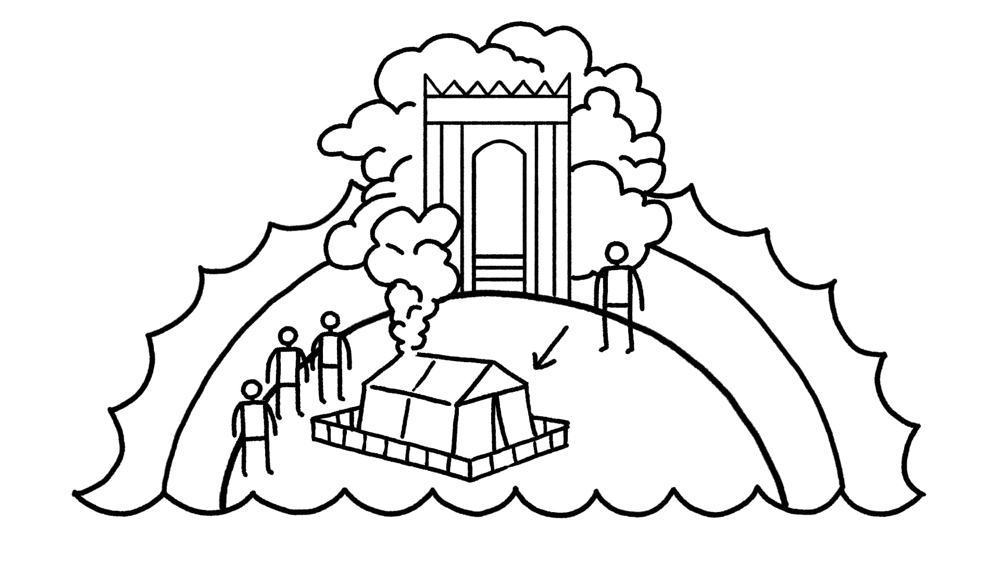

Sessão 24: Céus e Terra Unidos no TemploSession 24: Heaven and Earth United in the Temple
Principais LiçõesKey Takeaways
Deus consistentemente traz a realidade celestial para dentro da realidade terrena.God consistently brings the heavenly reality into the earthly reality.
Vemos isso com o Éden, Babilônia, Moisés no Monte Sinai, o sonho de Jacó, o tabernáculo e o templo.We see this with Eden, Babylon, Moses on Mount Sinai, Jacob’s dream, the tabernacle, and the temple.
Em última análise, isso ocorre em Jesus, o verdadeiro humano feito à imagem de Deus, que “habitou (literalmente “tabernaculou”) entre nós” (João 1:14) como a glória de Deus no tabernáculo.Ultimately, this occurs in Jesus, the true human made in God’s image, who “dwelt (literally “tabernacled”) among us” (John 1:14) like God’s glory in the tabernacle.
Os Muitos Significados de “Céu” na Bíblia Dada a realidade das águas acima dos céus (veja as notas de “As Águas de Cima e de Baixo" na sessão 16), a palavra hebraica “céus” (shamayim / שמים) pode ser usada de três maneiras distintas dentro da geografia cósmica bíblica.The Many Meanings of “Heaven” in the Bible Given the reality of the waters above the heavens (see “The Waters Above and Below" notes in session 16), the Hebrew word “heavens” (shamayim / שמים) can be used in three distinct ways within biblical cosmic geography.
“Céus” como a Cúpula do Céu Que Divide as Águas Cósmicas de Cima e de Baixo“Heavens” as the Sky-Dome That Divides the Cosmic Waters Above and Below
Gênesis 1:6-8 NRSV*Genesis 1:6-8 NRSV*
6 E Deus disse: “Haja uma cúpula no meio das águas, e que ela separe as águas das águas.” 7 Então Deus fez a cúpula, e separou as águas que estavam abaixo da cúpula das águas que estavam acima da cúpula. E assim foi. 8 Deus chamou a cúpula de “céus.” E houve tarde e houve manhã, segundo dia. *Palavras-chave Adaptadas pelo Professor “Céus” como o Lado do Céu Voltado para a Terra Que É Visível para Nós e Acessível às Aves6 And God said, “Let there be a dome in the midst of the waters, and let it separate the waters from the waters.” 7 So God made the dome, and separated the waters which were below the dome from the waters which were above the dome. And it was so. 8 God called the dome “heavens.” And there was evening and there was morning, a second day. *Key Words Adapted by Teacher “Heavens” as the Landward Side of the Sky-Dome That Is Visible to Us and Accessible to the Birds
Gênesis 1:20 ESV*Genesis 1:20 ESV*
E Deus disse: “Que as águas fervilhem com criaturas viventes que se movem, e aves que voam sobre o terreno contra a superfície da cúpula dos céus.” *Palavras-chave Adaptadas pelo ProfessorAnd God said, “Let the waters swarm with swarming living creatures, and birds that fly over the land against the surface of the dome of the heavens.” *Key Words Adapted by Teacher
Salmos 8:8a NASBPsalm 8:8a NASB
... as aves dos céus ... Veja também Salmo 79:2 “Céus” como o Trono Divino de Deus Acima da Cúpula do Céu... the birds of the heavens ... See also Psalm 79:2 “Heavens” as God’s Divine Throne Above the Sky-Dome
Salmos 2:4 NIVPsalm 2:4 NIV
Aquele que está entronizado nos céus ...The one enthroned in the heavens ...
Salmos 11:4 NIVPsalm 11:4 NIV
O SENHOR está no seu santo templo; o SENHOR está no seu trono celestial. Ele observa a todos na terra; os seus olhos os examinam. O Céu, o Templo e o Monte Sião O templo celestial é a morada transcendente de Deus, e as pessoas o vislumbram quando encontram Deus em lugares onde Céu e Terra se sobrepõem.The LORD is in his holy temple; the LORD is on his heavenly throne. He observes everyone on earth; his eyes examine them. Heaven, the Temple, and Mount Zion The heavenly temple is God’s transcendent dwelling, and people glimpse it when they encounter God in places where Heaven and Earth overlap.
Gênesis 28:10-17 NASBGenesis 28:10-17 NASB
10 Então Jacó partiu de Berseba e foi em direção a Harã. 11 Ele chegou a um certo lugar e passou a noite lá, porque o sol já se tinha posto; e ele pegou uma das pedras do lugar e a colocou debaixo da sua cabeça, e deitou-se naquele lugar. 12 Ele teve um sonho, e eis que uma escada/rampa estava posta sobre o terreno com o seu topo alcançando os céus; e eis que os anjos de Deus subiam e desciam por ela. 13 E eis que o SENHOR estava acima dela e disse: “Eu sou o SENHOR, o Deus de seu pai Abraão e o Deus de Isaque ... ” 16 Então Jacó acordou do seu sono e disse: “Certamente o SENHOR está neste lugar, e eu não o sabia.” 17 Ele teve medo e disse: “Quão temível é este lugar! Este não é outro senão a casa de Deus, e esta é a porta do céu.”10 Then Jacob departed from Beersheba and went toward Haran. 11 He came to a certain place and spent the night there, because the sun had set; and he took one of the stones of the place and put it under his head, and lay down in that place. 12 He had a dream, and behold, a stairway/ramp was set on the land with its top reaching to the skies; and behold, the angels of God were ascending and descending on it. 13 And behold, the LORD stood above it and said, “I am the LORD, the God of your father Abraham and the God of Isaac ... ” 16 Then Jacob awoke from his sleep and said, “Surely the LORD is in this place, and I did not know it.” 17 He was afraid and said, “How awesome is this place! This is none other than the house of God, and this is the gate of heaven.”
Êxodo 24:9-13 NASBExodus 24:9-13 NASB
9 Então Moisés subiu [ao Monte Sinai] com Arão, Nadabe e Abiú, e setenta dos anciãos de Israel, 10 e eles viram o Deus de Israel; e debaixo dos seus pés apareceu um pavimento de safira, claro como o próprio céu. 11 No entanto, ele não estendeu a sua mão contra os nobres dos filhos de Israel; e eles viram a Deus, e comeram e beberam. 12 Ora, o SENHOR disse a Moisés: “Suba até mim no monte e permaneça lá, e eu lhe darei as tábuas de pedra com a lei e o mandamento que escrevi para a instrução deles.” 13 Então Moisés se levantou com Josué, seu servo, e Moisés subiu ao monte de Deus.9 Then Moses went up [to Mount Sinai] with Aaron, Nadab and Abihu, and seventy of the elders of Israel, 10 and they saw the God of Israel; and under his feet there appeared to be a pavement of sapphire, as clear as the sky itself. 11 Yet he did not stretch out his hand against the nobles of the sons of Israel; and they saw God, and they ate and drank. 12 Now the LORD said to Moses, “Come up to me on the mountain and remain there, and I will give you the stone tablets with the law and the commandment which I have written for their instruction.” 13 So Moses arose with Joshua his servant, and Moses went up to the mountain of God.
Êxodo 24:15-25:9 NASBExodus 24:15-25:9 NASB
15 Então Moisés subiu ao monte, e a nuvem cobriu o monte. 16 A glória do SENHOR repousou sobre o Monte Sinai, e a nuvem o cobriu por seis dias; e no sétimo dia ele chamou Moisés do meio da nuvem. 17 E aos olhos dos filhos de Israel a aparência da glória do SENHOR era como um fogo consumidor no topo do monte. 18 Moisés entrou no meio da nuvem enquanto subia ao monte; e Moisés esteve no monte quarenta dias e quarenta noites. 1 Então o SENHOR falou a Moisés, dizendo ... 8 “Que eles construam um santuário para mim, para que eu habite no meio deles. 9 Segundo tudo o que eu lhe mostrarei, como o modelo do tabernáculo e o modelo de todos os seus móveis, exatamente assim você o construirá.”15 Then Moses went up to the mountain, and the cloud covered the mountain. 16 The glory of the LORD rested on Mount Sinai, and the cloud covered it for six days; and on the seventh day he called to Moses from the midst of the cloud. 17 And to the eyes of the sons of Israel the appearance of the glory of the LORD was like a consuming fire on the mountain top. 18 Moses entered the midst of the cloud as he went up to the mountain; and Moses was on the mountain forty days and forty nights. 1 Then the LORD spoke to Moses, saying ... 8 “Let them construct a sanctuary for me, that I may dwell among them. 9 According to all that I am going to show you, as the pattern of the tabernacle and the pattern of all its furniture, just so you shall construct it.”
O templo celestial é a morada transcendente de Deus, e as pessoas têm vislumbres dele quando encontram Deus em lugares onde Céu e Terra se sobrepõem. A visão de mundo nestas histórias nos mostra que os reinos celestial e terreno não estão completamente separados porque eles se sobrepõem em lugares e tempos-chave. Poderíamos dizer que estes são momentos de “Céu na Terra.” Observe que ambas as histórias tratam da fundação de espaços sagrados: Jacó faz um templo em Betel, e Moisés modela o tabernáculo segundo o templo celestial. Nesta visão de mundo, o tabernáculo e o templo de Israel são um micro-cosmos de toda a criação, o lugar onde Céu e Terra são um. Isso explica por que esses espaços sagrados e as histórias de sua criação estão carregados de imagens e simbolismo cósmico. A Criação em Gênesis 1 O Tabernáculo em Êxodo 25-31, 35-40 O Templo em 1 Reis 6-8 Criado pelo Espírito de Deus (אלהים רוח) [Gn. 1:2] Criado por Bezalel de Judá, que é “cheio do Espírito de Deus, sabedoria e entendimento” (רוח אלהים) [Êx. 31:3; 35:30-31] Criado por Hirão de Tiro, que é “cheio de sabedoria e entendimento” [1 Rs. 7:13-14] A criação é o produto de sete atos de fala divinos em Gênesis 1. Sete dias se abrem com o comando divino: “E Deus disse …” Dia 1 - Gn. 1:5 Dia 2 - Gn. 1:8 Dia 3 - Gn. 1:13 Dia 4 - Gn. 1:19 Dia 5 - Gn. 1:23 Dia 6 - Gn. 1:31 Dia 7 - Gn. 2:1-3The heavenly temple is God’s transcendent dwelling, and people get glimpses of it when they encounter God in places where Heaven and Earth overlap. The worldview in these stories shows us the heavenly and earthly realms are not completely separate because they overlap at key places and times. We might say these are moments of “Heaven on Earth.” Notice that both of these stories are about the foundation of sacred spaces: Jacob makes a temple in Bethel, and Moses models the tabernacle after the heavenly temple. In this worldview, Israel’s tabernacle and temple are a micro-cosmos of all creation, the place where Heaven and Earth are one. This explains why these sacred spaces and the stories of their creation are loaded with cosmic imagery and symbolism. Creation in Genesis 1 The Tabernacle in Exodus 25-31, 35-40 The Temple in 1 Kings 6-8 Created by the Spirit of God (אלהים רוח) [Gen. 1:2] Created by Bezalel of Judah, who is “filled with the Spirit of God, wisdom and understanding” (רוח אלהים) [Exod. 31:3; 35:30-31] Created by Hiram of Tyre, who is “filled with wisdom and understanding” [1 Kgs. 7:13-14] Creation is the product of seven divine speech acts in Genesis 1. Seven days open with divine command: “And God said …” Day 1 - Gen. 1:5 Day 2 - Gen. 1:8 Day 3 - Gen. 1:13 Day 4 - Gen. 1:19 Day 5 - Gen. 1:23 Day 6 - Gen. 1:31 Day 7 - Gen. 2:1-3
SábadoSabbath
As instruções do tabernáculo vêm em sete discursos divinos. Sete discursos se abrem com o comando divino: “E YHWH falou a Moisés …” Discurso 1 - Êx. 25:1 Discurso 2 - Êx. 30:11 Discurso 3 - Êx. 30:17 Discurso 4 - Êx. 30:22 Discurso 5 - Êx. 30:34 Discurso 6 - Êx. 31:1 Discurso 7 - Êx. 31:12Tabernacle instructions come in seven divine speeches. Seven speeches open with divine command: “And YHWH spoke to Moses …” Speech 1 - Exod. 25:1 Speech 2 - Exod. 30:11 Speech 3 - Exod. 30:17 Speech 4 - Exod. 30:22 Speech 5 - Exod. 30:34 Speech 6 - Exod. 31:1 Speech 7 - Exod. 31:12
Comando do SábadoSabbath Command
O templo é dedicado com sete petições por Salomão, levando a uma festa de sete dias. Petição 1 - 1 Rs. 8:31-32 Petição 2 - 1 Rs. 8:33-34 Petição 3 - 1 Rs. 8:35-37a Petição 4 - 1 Rs. 8:37b-40 Petição 5 - 1 Rs. 8:41-43 Petição 6 - 1 Rs. 8:44-45 Petição 7 - 1 Rs. 8:46-53 Festas de sete dias “e os céus e o terreno foram completados ( כלה)” [Gn. 2:1] “e Moisés completou (כלה) a obra ( מלאכה)” [Êx. 40:33] “e Salomão construiu o templo e o terminou (כלה)” [1 Rs. 6:14] “e Deus descansou (שבת) no sétimo dia …” “e a nuvem cobriu a tenda do encontro, e a glória de YHWH encheu a tenda.” [Êx. 40:34] “e a nuvem encheu a casa de Yahweh” [1 Rs. 8:10-11] Comparando a Criação, o Tabernáculo e o Templo. Criado por Tim Mackie para BibleProject Classroom: Heaven and Earth (2019). O universo em três níveis em Gênesis 1 (céus-terreno-mar) corresponde diretamente à geografia em três níveis do Éden em Gênesis 2-3. Este design em três níveis é simbolicamente evocado no design dos templos antigos, e eleThe temple is dedicated with seven petitions by Solomon, leading to a seven-day feast. Petition 1 - 1 Kgs. 8:31-32 Petition 2 - 1 Kgs. 8:33-34 Petition 3 - 1 Kgs. 8:35-37a Petition 4 - 1 Kgs. 8:37b-40 Petition 5 - 1 Kgs. 8:41-43 Petition 6 - 1 Kgs. 8:44-45 Petition 7 - 1 Kgs. 8:46-53 Seven-day feasts “and the skies and the land were completed ( כלה)” [Gen. 2:1] “and Moses completed (כלה) the work ( מלאכה)” [Exod. 40:33] “and Solomon built the temple and he finished (כלה) it” [1 Kgs. 6:14] “and God rested (שבת) on the seventh day …” “and the cloud covered the tent of meeting, and the glory of YHWH filled the tent.” [Exod. 40:34] “and the cloud filled the house of Yahweh” [1 Kgs. 8:10-11] Comparing Creation, the Tabernacle, and the Temple. Created by Tim Mackie for BibleProject Classroom: Heaven and Earth (2019). The three-tiered universe in Genesis 1 (skies-land-sea) directly corresponds to the three-tiered geography of Eden in Genesis 2-3. This three-tiered design is symbolically recalled in the design of ancient temples, and it
especificamente se alinha com as características simbólicas do templo de Israel.specifically aligns with symbolic features of Israel’s temple.
Tabernáculo / TemploTabernacle / Temple
Geografia Cósmica em Gênesis 1:1-2:3 Geografia Cósmica em Gênesis 2:4-3:24 Lugar santíssimoCosmic Geography in Genesis 1:1- 2:3 Cosmic Geography in Genesis 2:4- 3:24 Holy of holies
CéuHeaven
O meio do jardim Lugar santo • Menorá = árvore • Querubins = animais • Sacerdotes = humanos O terreno • Árvores frutíferas • Animais • 'adam O jardim no ÉdenThe middle of the garden Holy place • Menorah = tree • Cherubim = animals • Priests = humans The land • Fruit trees • Animals • ‘adam The garden in Eden
PátioCourtyard
• Mar de bronze (1 Rs. 8:23) As águas O terreno fora do jardim O Tabernáculo ou Templo Relacionado à Geografia Cósmica. Criado por Tim Mackie para BibleProject Classroom: Heaven and Earth (2019). “A função destas correspondências é sublinhar a representação do santuário como um mundo, isto é, um ambiente ordenado, solidário e obediente, e a representação do mundo como um santuário, isto é, um lugar em que o reinado de Deus é visível e incontestado, e a sua santidade é palpável, não ameaçada e penetrante. ... O Templo foi concebido como um microcosmo, um mundo em miniatura. Mas é igualmente o caso de que em Israel, o mundo, ou melhor, o mundo ideal ... foi concebido como um macro-templo, o palácio de Deus que é permeado com a sua presença e no qual tudo está alinhado com a sua vontade.” Levenson, Jon (1994). Creation and the Persistence of Evil: The Jewish Drama of Divine Omnipotence. Princeton University Press. 86. “A Bíblia Hebraica está repleta de descrições da criação como um tabernáculo que Deus armou (Sl. 104;• Bronze sea (1 Kgs. 8:23) The waters The land outside the garden The Tabernacle or Temple Related to Cosmic Geography. Created by Tim Mackie for BibleProject Classroom: Heaven and Earth (2019). “The function of these correspondences is to underscore the depiction of the sanctuary as a world, that is, an ordered, supportive, and obedient environment, and the depiction of the world as a sanctuary, that is, a place in which the reign of God is visible and unchallenged, and his holiness is palpable, unthreatened, and pervasive. ... The Temple was conceived as a microcosm, a miniature world. But it is equally the case that in Israel, the world, or I should say, the ideal world ... was conceived as a macro-temple, the palace of God which is permeated with his presence and in which all is aligned with his will.” Levenson, Jon (1994). Creation and the Persistence of Evil: The Jewish Drama of Divine Omnipotence. Princeton University Press. 86. “The Hebrew Bible is replete with descriptions of creation as a tabernacle which God has pitched (Ps. 104;
Jó 9:8; Is. 40:22), ou uma casa que Deus estabeleceu (com pilares, janelas e portas: Jó 26:11;Job 9:8; Isa. 40:22), or a house that God has established (with pillars, windows, and doors: Job 26:11;
Gn. 7:11; Sl. 78:24). Consequentemente, o templo de Sião, como um santuário que Deus estabeleceu, torna-se uma metáfora microcósmica para a própria criação. Isso encontra expressão explícita no Salmo 78:69.” Gage, W.A. (2001). The Gospel of Genesis: Studies in Protology and Eschatology. Wipf and Stock Publishers. 54.Gen. 7:11; Ps. 78:24). Consequently, the temple of Zion, as a sanctuary that God has established, becomes a microcosmic metaphor for creation itself. This finds explicit expression in Psalm 78:69.” Gage, W.A. (2001). The Gospel of Genesis: Studies in Protology and Eschatology. Wipf and Stock Publishers. 54.
Salmos 78:68-69 NASBPsalm 78:68-69 NASB
68 Mas escolheu a tribo de Judá, o Monte Sião que ele amou. 69 E ele construiu o seu santuário como as alturas, como o terreno que ele fundou para sempre.68 But chose the tribe of Judah, Mount Zion which he loved. 69 And he built his sanctuary like the heights, Like the land which he has founded forever.
A geografia do Éden dentro da terra seca de Gênesis 2-3 retrata uma topografia de três partes. Esta concepção do jardim do Éden na terra seca fornece um modelo simbólico para o tabernáculo-templo de Israel, especialmente como descrito no templo ideal/restaurado de Ezequiel (Ez. 40-48). Diagrama da Geografia do Éden em Três Partes. Criado por Tim Mackie para BibleProject Classroom: Adam to Noah (2020).The geography of Eden within the dry land of Genesis 2-3 depicts a three-part topography. This conception of the garden of Eden on the dry land provides a symbolic template for Israel’s tabernacle temple, especially as described in Ezekiel’s ideal/restored temple (Ezek. 40-48). Three-Part Eden Geography Diagram. Created by Tim Mackie for BibleProject Classroom: Adam to Noah (2020).
Layout do Tabernáculo em Três Partes. Criado por Tim Mackie para BibleProject Classroom: Adam to Noah (2020). Adaptado de Morales, Michael L. (2015). Who Shall Ascend the Mountain of the Lord?: A Biblical Theology of the Book of Leviticus. IVP Academic. Pela BibleProject para Classroom: Adam to Noah (2020). “Para entender como o templo funcionava, devemos primeiro olhar como aqueles que adoravam lá entendiam o espaço e o tempo. As ideias modernas de espaço e tempo são muito diferentes, e se não estamos cientes deThree-Part Tabernacle Layout. Created by Tim Mackie for BibleProject Classroom: Adam to Noah (2020). Adapted from Morales, Michael L. (2015). Who Shall Ascend the Mountain of the Lord?: A Biblical Theology of the Book of Leviticus. IVP Academic. By BibleProject for Classroom: Adam to Noah (2020). “In order to understand how the temple functioned we must first look at how those who worshipped there understood space and time. Modern ideas of space and time are very different, and if we are not aware of
isso, tudo sobre o templo parece estranho e quase ridículo. ... Temos que tentar ficar onde os adoradores antigos ficavam, pensar como eles pensavam e olhar para onde eles olhavam, e talvez vislumbremos o que eles viram. ... Nossa experiência do mundo material é possibilitada pela nossa percepção das três dimensões do espaço ... e pela dimensão do tempo. O mundo [bíblico] prevê outra maneira de ser, uma dimensão em que não há limitação espacial nem tempo no nosso sentido, mas que compartilha com o nosso mundo as forças de amor, ódio, obediência e rebelião. Este outro mundo é frequentemente chamado de 'Eternidade,' que não significa um período de tempo incrivelmente longo, mas sim uma existência sem tempo. ... Ela está fora da nossa experiência de tempo e, na verdade, subjaz inteiramente a cada percepção que temos do tempo. Poderia talvez ser chamada de crença em certos princípios básicos sobre os quais o mundo foi baseado, princípios que poderiam ser comparados às nossas 'leis' da ciência. ... Da mesma forma, o espaço e o tempo eternos estavam presentes em sua totalidade no templo, de modo que um espaço sagrado de cerca de trezentos metros quadrados poderia representar o mundo inteiro. ... A palavra hebraica para este modo de representação é mashal (משל), traduzida como 'parábola.' [Nesta visão de mundo] uma história ou visão do mundo celestial poderia corresponder ou representar uma situação na terra. ... O templo em Jerusalém era ... não apenas um edifício altamente decorado, mas sim um lugar onde o eterno e o terreno eram um. As decorações representavam o mundo celestial, mas era mais do que apenas uma representação. O templo era de fato o mundo celestial. ... [É por isso que] nem sempre é possível saber se o cenário de uma história bíblica [como Isaías 6] é o templo terreno ou a corte celestial do Santo. Enquanto nós sempre queremos separar o céu e a terra, os antigos autores bíblicos não o faziam. Os rituais do templo foram realizados na terra, mas faziam parte de uma realidade celestial eterna.” Baker, Margaret (2008). The Gate of Heaven: The History and Symbolism of the Temple in Jerusalem. Sheffield Phoenix Press Ltd. 58-61. O Retrato Complexo do Céu como “Acima” e “Dentro” e “Fora” Enquanto as imagens dominantes dos céus estão acima do céu, há outros textos sobre a presença de Deus que usam um esquema espacial totalmente diferente. A Presença de Deus Está Dentro do Espaço Sagrado (Tabernáculo ou Templo)this, everything about the temple seems strange and almost ridiculous. ... We have to try and stand where ancient worshippers stood, think as they thought, and look where they looked, and perhaps we will glimpse what they saw. ... Our experience of the material world is made possible by our perception of the three dimensions of space ... and by the dimension of time. The [biblical] world envisages another manner of being, a dimension in which there is neither spatial limitation nor time in our sense, but one which shares with our world the forces of love, hate, obedience, and rebellion. This other world is often called ‘Eternity,’ which does not mean an unbelievably long span of time, but rather an existence without time. ... It lies outside our experience of time, and actually underlies in its entirety every perception we have of time. It could perhaps be called a belief in certain basic principles on which the world was based, principles which could be compared to our ‘laws’ of science. ... In the same way, eternal space and time were present in their entirety in the temple, so that a sacred space of some three hundred square meters could represent the entire world. ... The Hebrew word for this mode of representation is mashal (משל), translated as “parable.” [In this worldview] a story or vision of the heavenly world could correspond or represent a situation on earth. ... The temple in Jerusalem was ... not just a highly decorated building, but rather a place where the eternal and earthly were one. The decorations represented the heavenly world, but it was more than just a representation. The temple actually was the heavenly world. ... [This is why] it is not always possible to know whether the setting of a biblical story [like Isaiah 6] is the earthly temple or the heavenly court of the Holy One. Whereas we always want to separate heaven and earth, the ancient biblical authors did not. The rituals of the temple were performed on earth, but were part of an eternal heavenly reality.” Baker, Margaret (2008). The Gate of Heaven: The History and Symbolism of the Temple in Jerusalem. Sheffield Phoenix Press Ltd. 58-61. The Complex Portrait of Heaven as “Above” and “Within” and “Without” While the dominant imagery of the heavens is above the sky, there are other texts about God’s presence that use a totally different spatial scheme. God’s Presence Is Within the Sacred Space (Tabernacle or Temple)
Êxodo 29:42-45 NIVExodus 29:42-45 NIV
42 ... na entrada da tenda do encontro, diante do SENHOR. Lá eu me encontrarei com você e falarei com você; 43 lá também me encontrarei com os israelitas, e o lugar será consagrado pela minha glória. 44 Então consagrarei a tenda do encontro e o altar, e consagrarei Arão e seus filhos para me servirem como sacerdotes. 45 Então habitarei entre os israelitas e serei o seu Deus.42 ... at the entrance to the tent of meeting, before the LORD. There I will meet you and speak to you; 43 there also I will meet with the Israelites, and the place will be consecrated by my glory. 44 So I will consecrate the tent of meeting and the altar and will consecrate Aaron and his sons to serve me as priests. 45 Then I will dwell among the Israelites and be their God.
Números 7:89 NASBNumbers 7:89 NASB
Ora, quando Moisés entrava na tenda do encontro para falar com ele, ouvia a voz falando com ele de cima do propiciatório que estava sobre a arca do testemunho, de entre os dois querubins, e assim ele falava com ele. A Criação É o Templo Cósmico de DeusNow when Moses went into the tent of meeting to speak with him, he heard the voice speaking to him from above the mercy seat that was on the ark of the testimony, from between the two cherubim, so he spoke to him. Creation Is God’s Cosmic Temple
Salmos 139:7-12 NIVPsalm 139:7-12 NIV
7 Para onde posso ir do seu Espírito? Para onde posso fugir da sua presença? 8 Se eu subo aos céus, você está lá; se eu faço a minha cama nas profundezas, você está lá. 9 Se eu me elevar nas asas da alvorada, se eu me estabelecer no lado mais distante do mar, 10 até lá a sua mão me guiará, a sua mão direita me segurará firme. 11 Se eu disser: “Certamente as trevas me esconderão e a luz se tornará noite ao meu redor,” 12 até as trevas não serão escuras para você; a noite brilhará como o dia, pois as trevas são como a luz para você.7 Where can I go from your Spirit? Where can I flee from your presence? 8 If I go up to the heavens, you are there; if I make my bed in the depths, you are there. 9 If I rise on the wings of the dawn, if I settle on the far side of the sea, 10 even there your hand will guide me, your right hand will hold me fast. 11 If I say, “Surely the darkness will hide me and the light become night around me,” 12 even the darkness will not be dark to you; the night will shine like the day, for darkness is as light to you.
Jeremias 23:23-24 NIVJeremiah 23:23-24 NIV
23 “Sou eu apenas um Deus de perto,” declara o SENHOR, “e não um Deus de longe? 24 Quem pode se esconder em lugares secretos para que eu não o veja?” declara o SENHOR. “Não encho eu o céu e a terra?” declara o SENHOR.23 “Am I only a God nearby,” declares the LORD, “and not a God far away? 24 Who can hide in secret places so that I cannot see them?” declares the LORD. “Do not I fill heaven and earth?” declares the LORD.
Atos 17:24-28 NIVActs 17:24-28 NIV
24 O Deus que fez o mundo e tudo o que nele há é o Senhor do céu e da terra e não habita em templos feitos por mãos humanas. 25 E ele não é servido por mãos humanas, como se precisasse de algo. Em vez disso, ele mesmo dá a todos vida e fôlego e tudo o mais. 26 De um só homem ele fez todas as nações, para que habitassem toda a terra; e marcou os seus tempos determinados na história e as fronteiras das suas terras. 27 Deus fez isso para que o buscassem e talvez estendessem a mão para ele e o encontrassem, embora ele não esteja longe de nenhum de nós. 28 “Pois nele vivemos, nos movemos e existimos.” Como disseram alguns dos seus próprios poetas: “Somos sua descendência.” A Presença de Deus Transcende os Céus para os Hipercéus24 The God who made the world and everything in it is the Lord of heaven and earth and does not live in temples built by human hands. 25 And he is not served by human hands, as if he needed anything. Rather, he himself gives everyone life and breath and everything else. 26 From one man he made all the nations, that they should inhabit the whole earth; and he marked out their appointed times in history and the boundaries of their lands. 27 God did this so that they would seek him and perhaps reach out for him and find him, though he is not far from any one of us. 28 “For in him we live and move and have our being.” As some of your own poets have said, “We are his offspring.” God's Presence Transcends the Heavens Into the Hyper-Heavens
1 Reis 8:10-13, 27 NIV1 Kings 8:10-13, 27 NIV
10 Quando os sacerdotes se retiraram do Lugar Santo, a nuvem encheu o templo do SENHOR. 11 E os sacerdotes não puderam realizar o seu serviço por causa da nuvem, pois a glória do SENHOR encheu o seu templo. 12 Então Salomão disse: “O SENHOR disse que habitaria em uma nuvem escura; 13 certamente construí um templo magnífico para você, um lugar para você habitar para sempre.” ... 27 “Mas Deus realmente habitará no terreno? Os céus, até os céus dos céus, não podem contê-lo. Quanto menos este templo que construí!” Observe o paradoxo apresentado pela presença localizada de Deus no templo. É um edifício “no terreno” que hospeda uma manifestação especial da presença divina. Mas ao mesmo tempo, Salomão reconhece que o10 When the priests withdrew from the Holy Place, the cloud filled the temple of the LORD. 11 And the priests could not perform their service because of the cloud, for the glory of the LORD filled his temple. 12 Then Solomon said, “The LORD has said that he would dwell in a dark cloud; 13 I have indeed built a magnificent temple for you, a place for you to dwell forever.” ... 27 “But will God really dwell on the land? The heavens, even the heavens of the heavens cannot contain you. How much less this temple I have built!” Notice the paradox presented by God’s localized presence in the temple. It is a building “on the land” that hosts a special manifestation of the divine presence. But at the same time, Solomon acknowledges that the
mundo inteiro não é suficiente para hospedar a imensidão da presença de Deus, e nem os céus ou os céus dos céus! Esta frase, “os céus dos céus” abre a natureza simbólica da linguagem do céu porque até os céus que conhecemos são apenas a camada externa, por assim dizer, do reino celestial supremo que está além da nossa detecção e experiência. Alguns autores bíblicos se referem a estes céus supremos do reino divino quando experimentam a presença de Deus em visões, sonhos e apocalipses.entire world is not sufficient to host the immensity of God’s presence, and neither are the heavens or the heavens of the heavens! This phrase, “the heavens of the heavens” cracks open the symbolic nature of heaven language because even the heavens that we know are only the outer layer, so to speak, of the ultimate heavenly realm that lies beyond our detection and experience. Some biblical authors refer to these ultimate heavens of the divine realm when they experience God’s presence in visions, dreams, and apocalypses.
1 É necessário gloriar-me, embora não seja proveitoso; mas passarei a visões e revelações do Senhor. 2 Conheço um homem no Messias que há catorze anos—se no corpo não sei, ou fora do corpo não sei, Deus sabe—tal homem foi arrebatado até o terceiro céu. 3 E sei como tal homem—se no corpo ou fora do corpo não sei, Deus sabe—4 foi arrebatado ao Paraíso e ouviu palavras inexprimíveis, que não é permitido a um homem falar. *Palavras-chave Adaptadas pelo Professor1 Boasting is necessary, though it is not profitable; but I will go on to visions and revelations of the Lord. 2 I know a man in the Messiah who fourteen years ago—whether in the body I do not know, or out of the body I do not know, God knows—such a man was caught up to the third heaven. 3 And I know how such a man—whether in the body or apart from the body I do not know, God knows—4 was caught up into Paradise and heard inexpressible words, which a man is not permitted to speak. *Key Words Adapted by Teacher
Isaías 6:1-4 NASBIsaiah 6:1-4 NASB
1 No ano da morte do rei Uzias, vi Yahweh sentado em um trono, alto e exaltado, e a cauda do seu manto enchendo o templo. 2 Os serafins estavam acima dele, cada um tendo seis asas: com duas cobria o rosto, com duas cobria os pés, e com duas voava. 3 E um clamava ao outro e dizia: “Santo, Santo, Santo, é o Senhor dos exércitos, toda a terra está cheia da sua glória.” 4 E os fundamentos dos umbrais tremeram com a voz daquele que clamava, enquanto o templo se enchia de fumaça.1 In the year of King Uzziah’s death I saw Yahweh sitting on a throne, lofty and exalted, with the train of his robe filling the temple. 2 Seraphim stood above him, each having six wings: with two he covered his face, and with two he covered his feet, and with two he flew. 3 And one called out to another and said, “Holy, Holy, Holy, is the Lord of hosts, The whole earth is full of his glory.” 4 And the foundations of the thresholds trembled at the voice of him who called out, while the temple was filling with smoke.
Apocalipse 4:1-2, 6 NASBRevelation 4:1-2, 6 NASB
1 Depois destas coisas olhei, e eis que uma porta estava aberta no Céu, e a primeira voz que eu tinha ouvido, como o som de uma trombeta falando comigo, disse: “Suba aqui, e eu lhe mostrarei o que deve acontecer depois destas coisas.” 2 Imediatamente eu estava no Espírito; e eis que um trono estava no Céu, e Alguém estava sentado no trono. ... 6 e diante do trono havia algo como um mar de vidro, como cristal; e no centro e ao redor do trono, quatro seres viventes cheios de olhos na frente e atrás.1 After these things I looked, and behold, a door standing open in Heaven, and the first voice which I had heard, like the sound of a trumpet speaking with me, said, “Come up here, and I will show you what must take place after these things.” 2 Immediately I was in the Spirit; and behold, a throne was standing in Heaven, and One sitting on the throne. ... 6 and before the throne there was something like a sea of glass, like crystal; and in the center and around the throne, four living creatures full of eyes in front and behind.
O Tabernáculo/Templo como o Espaço de Deus. Ilustração criada por Tim Mackie para BibleProject Classroom: Heaven and Earth (2019).The Tabernacle/Temple as God’s Space. Illustration created by Tim Mackie for BibleProject Classroom: Heaven and Earth (2019).

Ilustração da sessão 24.Illustration for session 24.
Pergunta para ReflexãoReflection Question
Onde na história bíblica você vê o Céu e a Terra se fundindo?Where in the biblical story do you see Heaven and Earth merging?